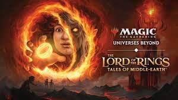

Analysis of the “Lord of the Rings” Magic the Gathering set

Introduction
Every couple of months, Wizards of the Coast releaces a new set of Magic the Gathering cards for player to buy and use. Each set has new cards with the set having its own unique focus, mechanics, and themes. Some sets are praised for being masterfuly created, containing fun and unique cards, and being a balenced set. Others crash and burn, with cretiques from players and generaly low popularity. These poorly built sets are a dissapointment for both players and Wizards of the Coast, and it would be very helpful if we could see what attributes a well built set poseses. If patterns can be found, Wizard would be able to consistantly make popular and fun sets for players to enjoy.
In this blog we will explore one particular set of card that is concedered to be one of the greatestes sets in the last couple of years; The Lord of the Rings set from June 2023. We want to see what the distribution of a confirmed popular and well built set looks like. We will explore different features of the set such as mana distribution, card types, or color distribution.
Our main question for this data exploration is “What makes a good MTG set?”. We will compare the different features of the data to see if any pattern emerge. My expectation is that a well built set will have evenly distributed cards, with each color having a similar ammount of cards, the mana cost being centered around 3 with a tail for higher costing cards, and each color having card types that match its theme.
Data Collection
Ethical Practices
To gather this data I used a MTG API I found online. Because of the size of the data, multiple requests to the API were needed. As part of the documentation for the API, they throttle the number of requests you can submit within an hour to 5000. This is way more than we need(a total of 9 requests is all the code uses), but I also implimented a wait time of 1 second between each request to keep good scraping practices.
Code for API
The first step for this particular API is creating the url. For this project we set up our code that analysis can be easily swapped from one set to another by changing the ‘endpoint’. If you would like to preform a similar analysis, you could change the three letter set code from ‘LTR’ to whichever set you would like to analize.
base_url = "https://api.magicthegathering.io/v1/cards"
endpoint = "?set=LTR"
url = base_url + endpointFrom there we made a simple loop to grab each page of the API, collecting the list of cards.
all_cards = []
page = 1
#Loop though all pages of cards
while True:
response = requests.get(url, params={"page": page})
data = response.json().get("cards", [])
if not data: # Stop when no cards are returned
break
#add cards to list
all_cards.extend(data)
#Output for number of pages
print(f"Fetched page {page} with {len(data)} cards")
page += 1
#Sleep time for good API etiquette
time.sleep(1)Duplicate Rows
We found a total of 856 cards by first filtering the API to only get cards in the Lord of the Rings set. Then we grabbed all the cards, iterating through each page, untill we scraped from every page available. One issue we found in the data was the number of duplicate cards, over half of the cards(about 500) we duplicate. This comes from the fact that each card has multiple different printings(art styles, teatments, languages, etc.), so we needed to condence this down to just one row per card. We ended up using only the original printing of each card, which brought the data set down to 289 cards.
Findings
In this blog we will first go throught the things we found that met our expectations and then we will discuss the findings that we did not expect.
Expected Findings
Color vs CMC
We found that the single colored cards had almost the exact same distribution as each other, with only the far tails differing slightly from each other. This is a good indicator of a balenced set, with each color having the same distribution of high costing and low costing cards.

The multi colored cards showed a bit more variation, but still seemed to hold similar distributions. One worthy note here is is the Black/Red cards (which are generaly very chaotic, random cards) have the largest range of mana values.

Rarity vs CMC
The mana value of cards does not seem to differ from rarities, the mythic being the exception, but that is likely due to the fact that they are generaly more unique, powerful cards and therefor cost more.

Card Type vs CMC
The card types follow the general patterns for their respective types, with instants and artifacts on the lower side(faster paced cards made for the early game), Enchantments and Sorceries in the middle(basically the more powerful, later game versions of the latter), and Creatures having the highest mana value and also the widest distribution(these cards can range from fast early game cards, to game ending slow cards).

Unexpected Findings
Distribution of Colors
What I found most interesting about the color distribution was the underwhelming number of multi colored cards. While it is standard to have less cards the more colors that are added, I was very supprised that not every combonation of color was represented in this set. I would expect a well received set to contain something for everyone and have not left out. This leads me to wonder if a balenced set is a good one.
|
Mono-color & Colorless
|
Two-color
|
Multi-color
|
Distribution of Supertypes
This set had a large number of Legendary cards, about a third of the set, which I do not believe is normal for a MTG set. Players are often upset when good cards are legendary as it makes them harder to use, espessialy when a bulk of the set is so. I wonder if having to many legendary creatures is a bad thing, or if the other aspects of the set make up for it.
| Supertype | Count |
|---|---|
| None | 175 |
| [Legendary] | 109 |
| [Basic] | 5 |
Distribution of Card Type for each Color
This was the biggest upset in my findings. I was expecting each color to be the clear leader in its field (Green for creatures, Blue for Instants and Sorcerys, White for Enchantments, etc.) and i was blown away by the results. All of the colors were even across the board, with only Instanty and Sorcerys having a clear leader, and sometimes not the one expected. The only part of this that I was expecting was Colorless to have the most Artifacts, as it is the main theme of that color. Very facinating to see.

Conclusion
While more research and analysis is required to make concreate judgments, it is interesting to see the trends of card in this set. I would encourage you readers to go and use this API for yourself on a different set and see if the findings are different. Are these trends the same for good sets, and different for bad sets, or is the popularity linked to a different metric and not found here. If you happen to find any corelations, please reach out as I would be delighted to hear about your discoveries.
You can find the API for yourself here and see the code I used to generate these graphs here. Good luck with the web scraping and I hope this little example helped!